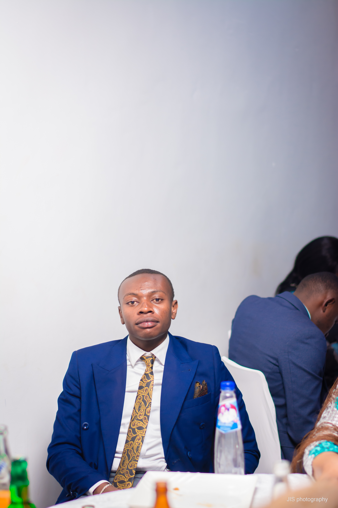
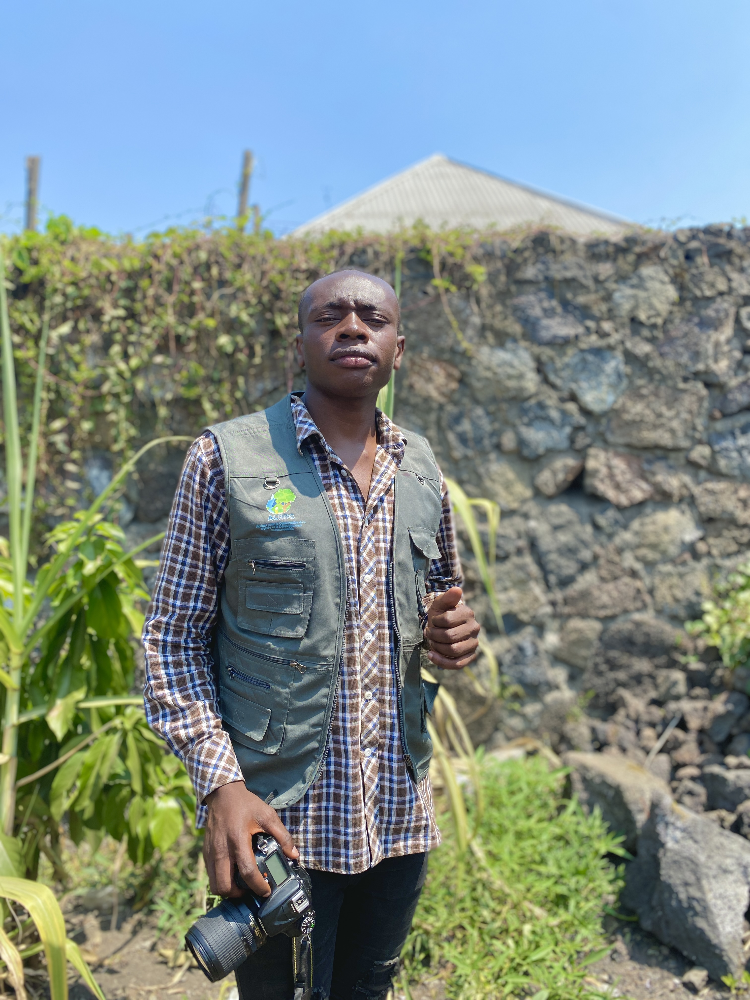

Une vision technique ancrée dans les réalités locales.
Je suis un étudiant en Génie Informatique spécialisé en Intelligence Artificielle et Innovation, avec une forte volonté de faire de la technologie un moteur de transformation concrète dans notre environnement.
Qui suis-je ?
Je suis actuellement étudiant en Bac 3 en Génie Informatique à l’Université de Lubumbashi, avec une spécialisation en IA, bases de données et innovation. Mon approche allie la rigueur académique et l’expérience terrain pour concevoir des solutions utiles, efficaces et adaptées au contexte africain.
En 2026, j’ai élargi mon expertise aux bases de données vectorielles (Pinecone, Qdrant, ChromaDB), aux bases relationnelles avancées (PostgreSQL, MySQL) et aux bases non-relationnelles (MongoDB, Redis). Cette maîtrise complète me permet de concevoir des architectures IA robustes et des systèmes RAG performants.
Mon objectif est simple : transformer le potentiel technologique du Congo en solutions concrètes, accessibles et durables pour les institutions, les entrepreneurs et les citoyens.

Expérience terrain
Avant de me consacrer pleinement à l’ingénierie logicielle et à l’IA, j’ai évolué dans des environnements exigeants avec TEDO SARL et ACNDC, en tant que superviseur terrain, photographe et acteur de la communication. Ces expériences m’ont appris à comprendre les besoins réels, l’organisation des équipes et l’importance d’une technologie qui aide vraiment les gens.
C’est précisément cette vision pratique qui guide aujourd’hui mon travail : la technologie la plus puissante est celle qui s’adapte aux besoins concrets des utilisateurs.

Le futur du Congo est numérique.
Je m’engage à créer des ponts entre l’IA de pointe et les secteurs clés comme l’éducation, l’énergie durable, l’agriculture, les services publics et les entreprises. Chaque ligne de code est une opportunité d’accélérer l’innovation locale, d’ouvrir des perspectives et de bâtir une autonomie numérique réelle.